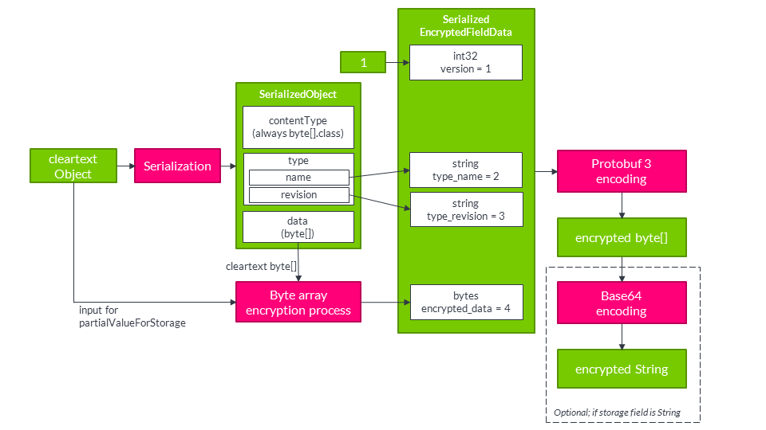

Annotations
Axon Data Protection provides annotations to mark fields for encryption. These annotations work on both regular classes and Java records.
The @DataSubjectId annotation
This field annotation is used to mark the field that identifies the key to be used for encrypting other fields. In its simplest form, it can be used like this:
@DataSubjectId
private UUID id;Axon Data Protection will derive a key identifier from the field’s value by invoking the toString() method, which means that key values should have a meaningful, deterministic implementation of toString(). This is already the case for @AggregateIdentifier fields in Framework applications. Axon Data Protection doesn’t try to enforce this restriction though, since there isn’t a sufficiently reliable way of doing so. A field annotated with @DataSubjectId should not hold a null value upon encryption/decryption - this will cause an exception.
In some cases, you may need to use a key identifier which is not present as a field value. For these cases, it is possible to include those key identifiers in the call to FieldEncrypter. This is further explained in preset encryption contexts.
The group attribute
The @DataSubjectId annotation has an optional String attribute group. This can be used to define multiple keys within the same object, which would allow later on to selectively delete individual (groups of) fields. For instance, a class could look like this:
public class NewCustomerEvent {
@DataSubjectId(group = "name")
private int idForName;
@PersonalData(group = "name")
private String name;
@DataSubjectId(group = "address")
private int idForAddress;
@PersonalData(group = "address")
private String address;
}This would now lead to two different keys (assuming idForName and idForAddress hold different values). These keys can be deleted individually, effectively deleting the name and address fields individually. Of course, there may only be one natural id field. In the next section, we’ll see an elegant solution for this situation using the prefix attribute.
If group is not specified, it defaults to the group identified by the empty string.
The prefix attribute
The @DataSubjectId annotation has an optional String attribute prefix. This value of this attribute will be used to determine the id of the key in the keystore. The actual key id will consist of the value of the field prefixed by the value of prefix. If not specified, this defaults to the empty string.
As an illustration, see this example:
@DataSubjectId(prefix = "aaa")
private int id;If the field id holds a value of 4, the derived key id will be aaa4.
This can be combined with the group attribute described earlier. The name/address segregation could be achieved like this:
public class NewCustomerEvent {
@DataSubjectId(group = "name", prefix = "name-")
@DataSubjectId(group = "address", prefix = "address-")
private int id;
@PersonalData(group = "name")
private String name;
@PersonalData(group = "address")
private String address;
}Now, if the value of id is 913, there will be 2 different keys in key store, with ids name-913 and address-913. They can be deleted individually to delete individual fields.
Map fields and the scope attribute
The @DataSubjectId annotation has an optional attribute scope of the type io.axoniq.dataprotection.api.Scope. This is an enum with values DEFAULT, KEY, VALUE, and BOTH. If the attribute isn’t specified, it will be DEFAULT.
For a field type that doesn’t implement the java.util.Map interface, the value must always be DEFAULT. For a field type that does implement the java.util.Map interface, the only allowed value is KEY. This has the effect that the value of any map key will be treated as a @DataSubjectId field for the purpose of processing the corresponding map value.
Limitations and inheritance
The value of the key identifier in a particular group must always be unambiguous. Therefore, there can be no two @DataSubjectId annotations with the same group attribute in the same class. The exception to this rule is in Map fields where the annotation is applied with KEY scope. In this case, the annotation on the map key gets precedence over the annotation on another field when processing the associated map value, which removes the ambiguity. Of course, on the same map field, there can’t more than one @DataSubjectId annotation with the same group.
In a class hierarchy, a subclass may have @DataSubjectId fields with the same group as used in the superclass. In this case, the deepest annotation will 'override' the superclass behaviour and thus take precedence.
Although more than one @DataSubjectId annotation may be present on the same field assuming they have different group attributes, the @DataSubjectId annotation cannot be combined with any other Axon Data Protection annotation with the same scope on the same field.
The @PersonalData annotation
This annotation identifies fields to be wholly encrypted by Axon Data Protection. It can be applied on those fields where the module can store the encrypted value in the same Java type as the clear text value. Because of this, it doesn’t need any secondary place for storage. We call this concept type-preserving encryption. Currently, the module supports the following types for @PersonalData:
-
byte[] -
String -
A
scala.Optionwith a supported type as its generic type. -
An array with a supported type as its component type.
-
Any class implementing
java.util.Collectionorscala.collection.Iterablewith a supported type as the type parameter, or a supported type as an upper bound in a wildcard type parameter. -
Any class implementing
java.util.Maporscala.collection.Mapwith a supported type as theMaptype parameter for the scope of the annotation (KEY,VALUEorBOTH), or again a supported type as an upper bound in a wildcard type parameter.
Please note that rules 3 - 6 work recursively, so for instance the following is legal:
@PersonalData
List<? extends Set<String[]>> b;When directly encrypting a String or byte[] field annotated with @PersonalData, Axon Data Protection will replace the value of the field. When encrypting an array, Collection, or scala.collection.Iterable, a few different cases may occur.
If as a result of the operation, the array/Collection/Iterable doesn’t have to be changed itself, it will be left as-is. This may be the case if it’s empty, if it was already encrypted when trying encryption, or when its elements are again collections which can be modified without being recreated.
If the collection does have to be changed, there is a different strategy for Java and Scala:
- Java
-
Java collections are generally mutable. If needed, the
FieldEncrypterwill clear the Java collection and then add the new encrypted elements (thus preserving order). In some cases, Java collections are immutable, such as the ones returned byCollections.unmodifiableList. By default, the module will try to modify these collections anyhow by performing reflection and directly modifying the internals. This is configurable behavior, which you may turn off by callingsetModifyImmutableCollections(false)on theFieldEncrypter. - Scala
-
Scala has a more systematic hierarchy of mutable and immutable collections. If a collection is mutable (specifically if it implements
scala.collection.generic.Growable), the module will clear the collection and add the new encrypted elements, like in the Java case. If a collection does not implement this interface, it is assumed immutable, and the module will create a new copy of the collection by calling thenewBuilder()method on the original collection. The value of themodifyImmutableCollectionsproperty doesn’t play a role when processing Scala collections.
The group attribute
The @PersonalData annotation has an optional group attribute which defaults to the empty string. Please see the @DataSubjectId group attribute discussion above for details.
The scope attribute
The @PersonalData annotation has an optional attribute scope of the type io.axoniq.dataprotection.api.Scope. This is an enum with values DEFAULT, KEY, VALUE, and BOTH. If the attribute isn’t specified, it will be DEFAULT.
For a field type that doesn’t implement the java.util.Map or scala.collection.Map interface, the value must always be DEFAULT. For a field type that does implement the java.util.Map or scala.collection.Map interface, it must always be something other than DEFAULT. When used on a Map, the value of this attribute determines which part of the map entry (key, value or both) get encrypted.
The replacement attribute
The @PersonalData annotation has an optional replacement attribute which defaults to the empty string. This attribute is intended to control the replacement value, that is, the value that the module will put in field if it is deleted (because it notices upon decryption that the required key is no longer available).
When @PersonalData is used on a String field, the default ReplacementValueProvider will use the value of the replacement attribute in this case. On all other field types, it will be ignored by default, but it can be used in some way by a custom ReplacementValueProvider. See ReplacementValueProvider for examples.
Multiple @PersonalData annotations and the reencrypt attribute
Normally speaking, @PersonalData is used under the following two assumptions:
-
There is only one
@PersonalDataannotation per field (or per Map-side in case of a Map-field). -
Encryption and decryption are idempotent: encrypting something which is already encrypted doesn’t change the data, and vice versa.
For the main Axon Data Protection use case, cryptographic erasure, this is fine. The idempotency property makes implementation and data migration easier since a data store can contain mixed encrypted/non-encrypted data without problems.
We’ve identified a use case where the assumption don’t hold and different behaviour is needed. This is the case when Axon Data Protection is used in two roles at the same time: to enable cryptographic erasure and to encrypt sensitive personal data to protect confidentiality. In this case, we may want to encrypt first with a key to protect confidentiality, and then another time to enable cryptographic erasure of the encrypted data. We use two @PersonalData annotations. The following rules apply:
-
During encryption, annotations are processed from right to left (so the annotation closest to the field is processed first). During decryption, this is reversed.
-
To make sure that the second round of encryption is actually executed, the
reencryptattribute must be set totrue. This disables the check that is normally done to implement the idempotency on encryption. Decryption is unaffected.
As an example, this could be used as follows:
class NewPersonCreated {
@DataSubjectId
UUID id;
@PersonalData
String name;
@PersonalData(reencrypt = true)
@PersonalData(group = "sensitive")
String somethingSecret;
}When processing this class, first, the value of somethingSecret will be encrypted with the key belong to group sensitive. (Which would have to be pre-provided since we didn’t map it to a @DataSubjectId - see preset encryption contexts.) After that, the name and the already encrypted form of somethingSecret will be encrypted in the default group, using the key identified by id. Now, deleting key id is sufficient to enable cryptographic erasure of all fields. To get access to the value of somethingSecret, the user must also have access to the sensitive key.
Instead of performing all encrypting operations at the same time, the module can be used to perform the operations on a subset of the groups. See partial encryption for details.
The @SerializedPersonalData annotation
This annotation identifies fields to be wholly encrypted. It can be applied on fields where type-preserving encryption isn’t possible and therefore the @PersonalData annotation is not allowed. If this annotation is present, Axon Data Protection will use the following procedure for encryption:
-
The value of the field will be serialized using the configured serializer.
-
This serialized value gets encrypted.
-
The encrypted value gets stored in a separate storage field, which must be
Stringorbyte[]typed and by default has the name of the value field suffixed by 'Encrypted'.
For instance, a LocalDate field might be encrypted like this:
@SerializedPersonalData
LocalDate dateOfBirth;
byte[] dateOfBirthEncrypted;Compared to @PersonalData, this has the advantage that we can now encrypt any field type, however it comes at the cost of having to introduce an additional field, and it incurs some additional CPU and storage overhead.

A difference with @PersonalData and @DeepPersonalData is that a @SerializedPersonalData field will never be examined recursively by going into the elements of an array, collection or map. It will always be encrypted entirely regardless of its type. This also creates a difference in what exactly is erasable: if you use @PersonalData or @DeepPersonalData on a collection, the individual elements are encrypted and therefore erasable, but the number of elements is in the clear. By using @SerializedPersonalData, you may obscure this as well (even though the length of the resulting ciphertext may still provide an indication).
The group attribute
The @SerializedPersonalData annotation has an optional group attribute which defaults to the empty string. Please see the @DataSubjectId group attribute discussion above for details.
The replacement attribute
The @SerializedPersonalData annotation has an optional replacement attribute which defaults to the empty string. This attribute is intended to control the replacement value, that is, the value that the module will put in field if it is deleted (because it notices upon decryption that the required key is no longer available). On a @SerializedPersonalData field, this attribute is ignored by the default ReplacementValueProvider but it can be used by a custom version. See ReplacementValueProvider for more details about this.
The storageField attribute
The @SerializedPersonalData annotation has an optional storageField attribute which defaults to the empty string. This can be used to control the actual field it uses for storage. If this attribute is empty, the module will look for the field name suffixed by 'Encrypted' as a storage field. This can be overridden by explicitly setting a storage field name with this annotation. For instance, the following might be used:
@SerializedPersonalData(storageField = "dobSecret")
LocalDate dateOfBirth;
byte[] dobSecret;The @DeepPersonalData annotation
The @DeepPersonalData annotation is used for those cases where a field shouldn’t be encrypted in its entirety, but should instead be recursively examined for Axon Data Protection annotations and processed accordingly. In this way, the the module can process more complex object graphs. An example use case would be this:
public class Person {
@DataSubjectId UUID id;
@PersonalData String name;
@DeepPersonalData Address address;
}
public class Address {
@PersonalData String line1;
@PersonalData String line2;
String country;
}In this case, while processing a Person, the module would recurse into the Address object. As a result, the Address.line1 and Address.line2 fields would get encrypted and can be deleted. The Address.country field would remain clear. Note that we don’t need another @DataSubjectId field in the Address class - this will be available from the context of processing the Person object. Of course, the Address class could have overridden the key id by having its own @DataSubjectId field.
The @DeepPersonalData annotation is allowed on fields with a type that carries at least one of the Axon Data Protection annotations (by itself or through a supertype), and any arrays/collections thereof (following the exact same recursion rules as described for @PersonalData).
The @PersonalDataType annotation
The @PersonalDataType annotation is a seldom used class annotation (all other Axon Data Protection annotations are field annotations). It is used in those cases where we want to use @DeepPersonalData on a field of a particular type, in cases when that type as such doesn’t carry any other Axon Data Protection annotations. The reason for still using @DeepPersonalData would be that we know that some or all of the subtypes do or may have such annotations. By the rules of @DeepPersonalData, this wouldn’t be allowed. This can be fixed by annotating the supertype with the @PersonalDataType annotation.
For example, we could write the following to model that a Person has a set of relations; each Relation may be another Person or a Pet.
@PersonalDataType
public interface Relation {
}
public class Person implements Relation {
@DataSubjectId UUID id;
@DeepPersonalData Set<Relation> relations;
}
public class Pet implements Relation {
String name;
}Without the @PersonalDataType annotation on the first line, the module wouldn’t accept the @DeepPersonalData on the relations field, because the Relation type doesn’t have any other Axon Data Protection field annotations.
Meta-annotations
All annotations from Axon Data Protection can also be used as meta-annotations: you can define your own annotation types, put one or more Axon Data Protection annotations on the annotation definition, and then whenever you apply that annotation it is as if the Axon Data Protection annotation gets applied. For instance, if you prefer the name Erasable over PersonalData, you might write:
@PersonalData
@Retention(RetentionPolicy.RUNTIME)
@Target(ElementType.FIELD)
public @interface Erasable {
}and then apply this in your own code like:
public class NewCustomerEvent {
@DataSubjectId private int id;
@Erasable private String name;
}Scala support
Although the annotations defined by the module, as described in the previous sections, can in principle be used directly in Scala applications, they suffer from two disadvantages:
-
When applied on a Scala class parameter (which is a common use case, since it’s natural to model events as Scala case classes), the annotation would by default only apply to the constructor parameter and not to the implied field. As a result, the annotation would not be detected by the
FieldEncrypter. This can be fixed by applyingscala.annotation.meta.field, but it leads to ugly code if that has to be applied every time. -
Conventionally, Scala prefers lower camel case annotation names rather than upper camel case.
To overcome the second disadvantage (naming convention), the module includes a Scala package object for io.axoniq.dataprotection.api with lower camel case type aliases for all 5 annotations defined by the module.
Option 1: Using the @field meta-annotation directly
When using Axon Data Protection annotations in Scala case classes, you must apply the @field meta-annotation to ensure the annotation targets the generated field rather than the constructor parameter:
import io.axoniq.framework.dataprotection.api.{DataSubjectId, PersonalData, DeepPersonalData, SerializedPersonalData}
import scala.annotation.meta.field
import java.time.LocalDate
case class NewCustomerEvent(
@(DataSubjectId @field) id: Int,
@(PersonalData @field)(group = "customer") name: String,
@(DeepPersonalData @field) address: Address,
@(SerializedPersonalData @field)(group = "customer") dateOfBirth: LocalDate,
dateOfBirthEncrypted: Array[Byte]
)The syntax @(AnnotationName @field) applies the @field meta-annotation to ensure proper field targeting. Without @field, the annotation would only apply to the constructor parameter and would be ignored by the FieldEncrypter.
Important: Always use @field when annotating case class parameters. This is a requirement, not optional.
Option 2: Using lower camel case type aliases (Alternative)
Using the type aliases provided in the Scala package object, the application code can use lower camel case naming:
import io.axoniq.dataprotection.api.{dataSubjectId, personalData}
import scala.annotation.meta.field
case class NewCustomerEvent(
@(dataSubjectId @field) id: Int,
@(personalData @field) name: String
)Important: The type aliases do NOT include the @field meta-annotation automatically. You must still apply @field manually when using case class parameters.
Important note on annotation parameters: Scala requires compile-time constants for annotation parameters. When using constants defined in Java classes, they must be public static final fields with literal string values (not computed values like GROUP_NAME + "-"). This is a Scala language requirement.
Scala class vs case class
When using mutable Scala classes (not case classes), apply annotations to var fields:
import scala.beans.BeanProperty
class CustomerSummary {
@BeanProperty
@(PersonalData @field)(group = CustomerPersonalDataGroup.GROUP_NAME)
var name: String = _
@BeanProperty
@(DeepPersonalData @field)
var address: Address = _
}Please note that Java annotations are completely separate from Scala annotations, and the module only deals with Java annotations. The lower camel case versions of the annotations are Scala type aliases to Java annotations rather than Scala annotations. The module will not detect Axon Data Protection annotations attached as meta-annotations to Scala annotations.